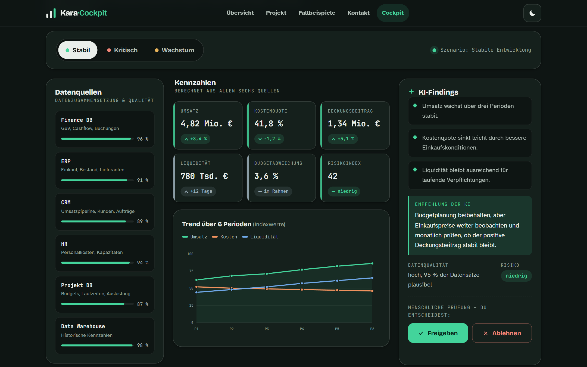
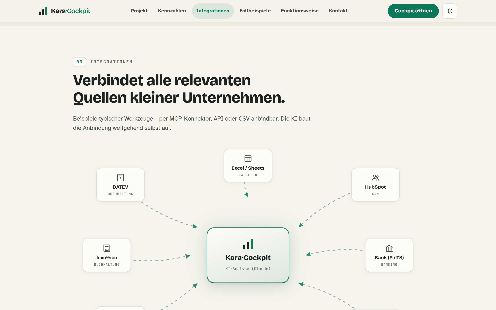

Interdisziplinäres Projekt (IDP) · Wirtschaftsinformatik
KI macht die Zahlen kleiner Unternehmen lesbar.
Ein KI-Controlling-Cockpit, das verteilte Unternehmensdaten zusammenführt, Kennzahlen berechnet, Trends erkennt und begründete Empfehlungen vorbereitet – gezeigt am fiktiven Unternehmen Kara.
Aufgabe
Kleine Unternehmen sammeln Daten in vielen Systemen – Finanzbuchhaltung, ERP, CRM und Personal –, gewinnen daraus aber selten einen schnellen, verlässlichen Überblick. Zeit, Personal und Budget für eigene KI-Projekte fehlen.
Umsetzung
Das Cockpit verbindet die Datenquellen über MCP-Konnektoren, berechnet die zentralen Kennzahlen, erkennt Trends und Abweichungen und begründet jede Auffälligkeit. Jede Empfehlung erscheint mit Quelle, Datenqualität und Risiko – die KI bereitet vor, der Mensch entscheidet (Human-in-the-loop).
Umgesetzt als statischer Web-Demonstrator (HTML/CSS/JS) ohne Backend. Website, Dokumentation und Erklärvideo sind selbst mit KI entstanden.
Ergebnis
Ein zeigbares Demo-Cockpit mit sechs Datenquellen, sechs Kennzahlen und drei Szenarien (stabil, kritisch, Wachstum). Drei Fallbeispiele zeigen den Nutzen:
- 01 Controlling-Cockpit – alle Kennzahlen auf einer Oberfläche
- 02 Budget- & Kostenabweichung – Plan-Ist-Vergleich, Kostenstellen-Ranking
- 03 Forecasting & Frühwarnsystem – frühe Liquiditäts- und Risikosignale

